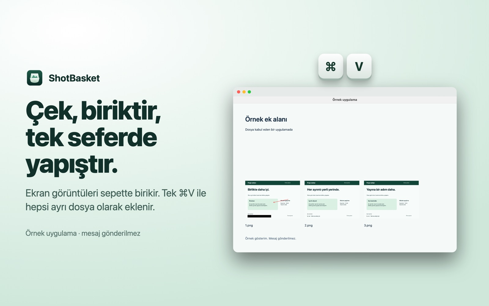
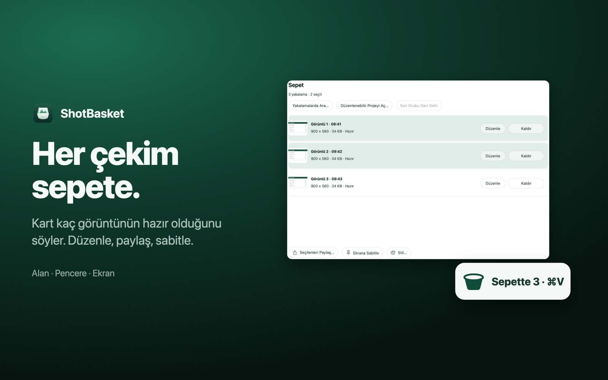
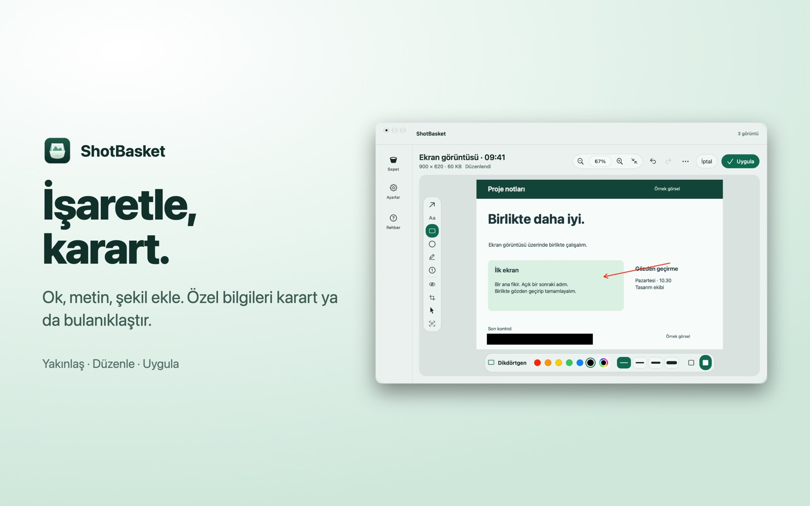
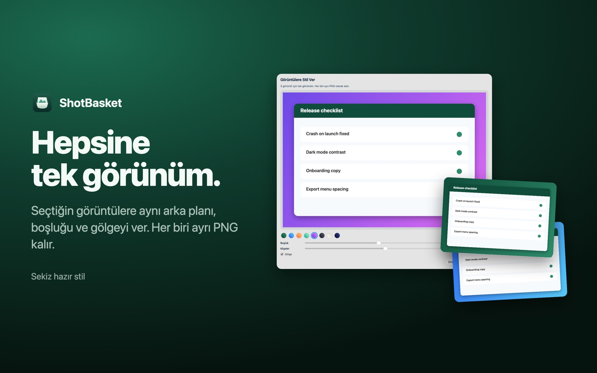
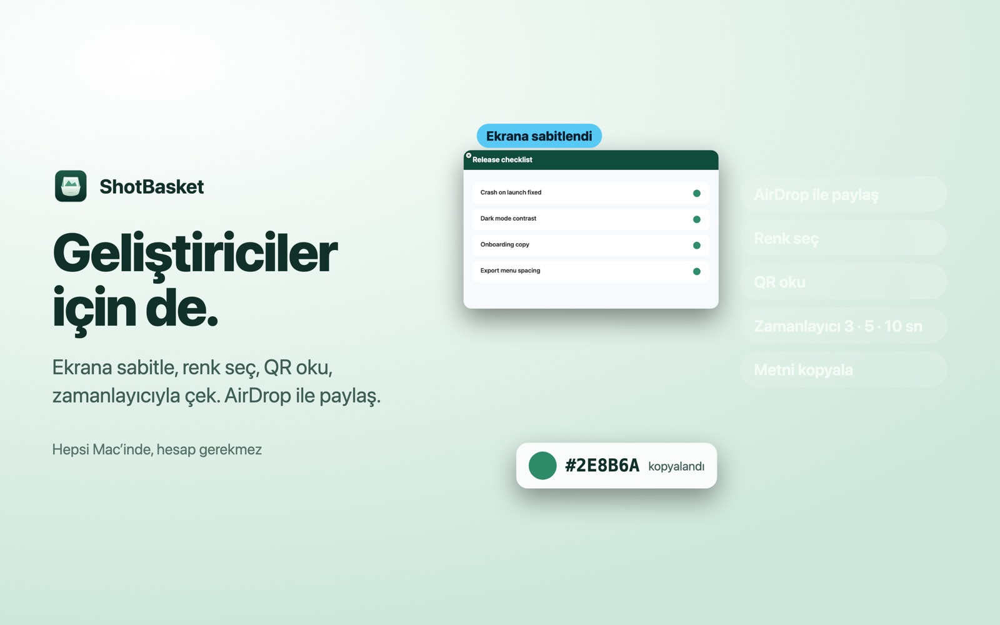
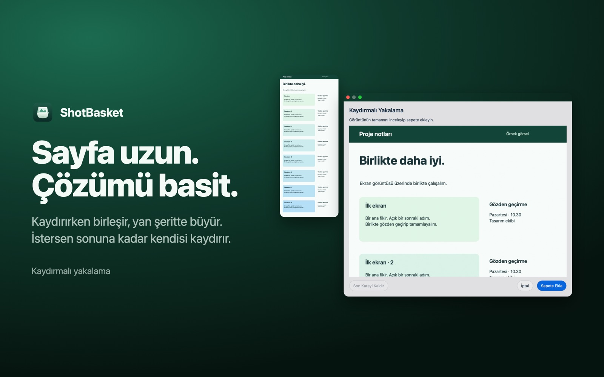
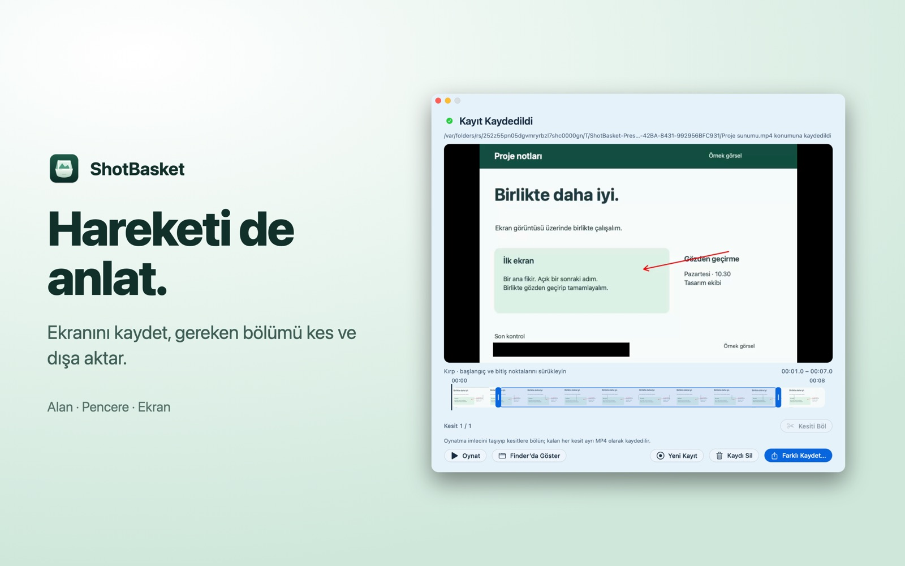

Mac’in menü çubuğunda ekran görüntüsü sepeti
Çok çek.Bir kez yapıştır.
İhtiyacın olan bütün ekran görüntülerini çek. Hepsi sepette bekler. Sonra tek ⌘V hepsini mesajına ayrı dosyalar olarak bırakır, çektiğin sırayla.
- Tek seferlik ödeme
- Abonelik yok
- Hesap yok
- İnternetsiz çalışır
Sorun
Pano tek görüntü tutar. Mesajın beş tane istiyor.
Her yeni ekran görüntüsü öncekini siler. Çekersin, sohbete geçersin, yapıştırırsın, geri dönersin ve hepsini baştan yaparsın. ShotBasket’le önce hepsini çekersin, sonra bir kez yapıştırırsın.
Beş ekran görüntüsü, alışılmış yoldan
19adım
- Çek
- Geç
- Yapıştır
- Dön
- Çek
- Geç
- Yapıştır
- Dön
- Çek
- Geç
- Yapıştır
- Dön
- Çek
- Geç
- Yapıştır
- Dön
- Çek
- Geç
- Yapıştır
Bu adımların dokuzu sadece pencere değiştirmek.
Beş ekran görüntüsü, ShotBasket ile
7adım
- Çek
- Çek
- Çek
- Çek
- Çek
- Geç
- ⌘V
Her görüntü ayrı bir dosya olarak gelir. Hiçbiri birleştirilmez, sen Gönder’e basana kadar hiçbir şey gitmez.
Çalışırken gör
Gerçek ekranlar. Gerçek kısayollar.







Araç kutusu
Çekmekle yapıştırmak arasındaki her şey.
İşaretle
Ok, metin, şekil ve numaralı adımlar.
Hepsine aynı görünüm
Her görüntüye aynı arka plan ve çerçeve.
Kaydırmalı yakalama
Bütün sayfa tek uzun görüntü.
Ekran kaydı
Kaydet, kırp, böl, MP4 olarak sakla.
Metin ve QR
Yazıyı ve QR kodu oku, Mac’inde.
Ekrana sabitle
Çalışırken görüntü üstte kalsın.
Renk seçici
Ekrandaki her noktanın HEX kodu.
Zamanlayıcı
Görüntüyü birkaç saniye sonra çek.
AirDrop ve Paylaş
Tek görüntüyü ya da bütün sepeti gönder.
İstediğin yere sürükle
Görüntüyü her uygulamaya ve tarayıcıya bırak.
Gizlilik
Hiçbir şey Mac’inden çıkmaz.
İnternet bağlantısı
ShotBasket internete hiç bağlanmaz. Var olmayan bir sunucudan ekran görüntün sızamaz.
Hesap
Aç ve çekmeye başla. Üyelik yok, giriş yok, e-posta yok.
Takip
Analitik yok, reklam yok, telemetri yok. Ne çektiğin seni ilgilendirir.
macOS hangi izinleri soracak ve neden
- Ekran Kaydı
- Ekran görüntüsü ve ekran kaydı almak için. Yeni macOS sürümlerinde adı Ekran ve Sistem Sesi Kaydı.
- Erişilebilirlik
- Yakalama kısayolları ve sepeti ⌘V ile yapıştırmak için. macOS 27’de adı Aygıt Denetimi ve Veri Erişimi.
- Mikrofon (isteğe bağlı)
- Sadece ekran kaydına sesini eklemek istersen.
Fiyat
Bir kez öde. Senin olsun.
Abonelik yok, hesap yok, uygulama içi satın alma yok. ShotBasket’i bir kez al, güncellemeleri Mac App Store’dan gelsin.
$9,99
Tek seferlik ödeme
- Sınırsız çekim, hepsi için tek ⌘V
- Ok, metin, bulanıklaştırma ve kırpmalı düzenleyici
- Kaydırmalı yakalama ve ekran kaydı
- Metin kopyalama, QR, sabitleme ve renk seçici
- macOS 13 ve sonrası, Apple silikon ve Intel
- Türkçe ve İngilizce
Fiyat ABD doları cinsinden. App Store sana kendi para biriminde gösterir.
Sorular
Almadan önce.
Hangi uygulamalara yapıştırabilirim?
Yapıştırınca dosya kabul eden her uygulamaya ve web sayfasına: e-posta, sohbet uygulamaları, notlar, iş takip araçları ve çoğu yükleme alanı. Dosyaları nasıl göstereceğine uygulama karar verir.
⌘V her yerde değişiyor mu?
Yalnızca sepette bekleyen görüntü varken. Sepet boşken ya da ShotBasket’i menü çubuğundan duraklattığında ⌘V, Mac’in normal yapıştırmasıdır.
Benim yerime mesaj gönderir mi?
Hayır. ShotBasket dosyaları tıkladığın alana yapıştırır. Return’e basmaz, hiçbir şey göndermez.
Ekran görüntülerim nerede tutuluyor?
Mac’inde ShotBasket’in kendi klasöründe. Sepetten çıkan görüntü seçtiğin süre sonunda silinir, bu süre en az on dakikadır. Kalıcı kopya için Ekran Görüntülerini Klasöre Kaydet’i aç.
Deneme sürümü var mı?
Mac App Store’da ücretli uygulamalar için deneme sürümü yok. ShotBasket sana uymazsa reportaproblem.apple.com adresinden Apple’dan iade isteyebilirsin.
iPhone ya da Windows sürümü var mı?
Hayır. ShotBasket Mac için yapıldı.